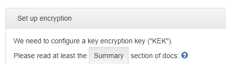

Preventing outdated docs links in software projects
When I started making documentation for Varasto, I thought about the numerous times I’ve seen projects with links to documentation that have resulted in a 404. I think I came up with a cool way to help with the issue.
tl;dr: typesafe documentation links are checked by the compilers on backend and frontend!
Motivation
To build motivation first, let’s first look at the benefits and results!
In my frontend (TypeScript + React-based) I can link to GitHub’s view of a Markdown doc like this:

The code from above picture looks like this:
<p>
Please read at least the <SmallWell>Summary</SmallWell> section of docs:
<DocLink doc={DocRef.DocsSecurityEncryptionREADMEMd} />
</p>
With this small trick, we get safe URLs in frontend and backend verified by the compilers (assuming you’re using typesafe programming languages). And by safe I mean that you cannot make a docs URL that doesn’t work - it’d be a compile error!
How does it look like in code?
Here’s the implementation for DocLink:
import { DocRef } from 'generated/stoserver/stoservertypes_types';
import * as React from 'react';
interface DocLinkProps {
doc: DocRef;
title?: string;
}
export class DocLink extends React.Component<DocLinkProps, {}> {
render() {
const url = DocGitHubMaster(this.props.doc);
return <a
href={url}
title={this.props.title}
target="_blank">
<Glyphicon icon="question-sign" />
{this.props.title || ''}
</a>;
}
}
export function DocGitHubMaster(doc: DocRef): string {
return 'https://github.com/function61/varasto/blob/master/' + doc;
}
If I need to make docs URLs in backend, it looks similar - like this:
docreference.GitHubMaster(stoservertypes.DocsSecurityEncryptionREADMEMd)
There’s one addition in backend though: I also have a test that checks each enum member actually exists as a file in the filesystem:
// tests that each for each member of DocRef (e.g. "docs/example.md") a file exists. that
// makes it possible for us to link to markdown view in GitHub with confidence that the URL
// will not 404 if we move files around later and forget to update the ref
func TestDocsExistForDocRefs(t *testing.T) {
for _, member := range stoservertypes.DocRefMembers {
member := member // pin
t.Run(string(member), func(t *testing.T) {
exists, err := fileexists.Exists("../../" + string(member))
assert.Ok(t, err)
assert.Assert(t, exists)
})
}
}
NOTE: we’ll later discuss improvements which would make the above check unnecessary.
Code generation to rescue
In Varasto I already use quite a lot of code generation - so the idea came naturally for if code generation could help with this issue.
I have a bunch of actual application-level data types in a JSON file. I added my documentation files (relative to the repo’s root) as a string-enum there:
{
"enums": [
{
"name": "DocRef",
"type": "string",
"stringMembers": [
"README.md",
"docs/client/README.md",
"docs/googledrive/README.md",
"docs/replication-policies/README.md",
"docs/guide_network-folders.md",
"docs/guide_setting-up-backup.md",
"docs/guide_setting-up-local-fs.md",
"docs/guide_setting-up-s3.md",
"docs/guide_setting-up-smart-monitoring.md",
"docs/guide_storing-movies.md",
"docs/guide_storing-tvshows.md",
"docs/security_encryption/README.md"
]
}
]
}
The autogenerated code for TypeScript looks like this:
export enum DocRef {
READMEMd = 'README.md',
DocsClientREADMEMd = 'docs/client/README.md',
DocsGoogledriveREADMEMd = 'docs/googledrive/README.md',
DocsReplicationPoliciesREADMEMd = 'docs/replication-policies/README.md',
DocsGuideNetworkFoldersMd = 'docs/guide_network-folders.md',
DocsGuideSettingUpBackupMd = 'docs/guide_setting-up-backup.md',
DocsGuideSettingUpLocalFsMd = 'docs/guide_setting-up-local-fs.md',
DocsGuideSettingUpS3Md = 'docs/guide_setting-up-s3.md',
DocsGuideSettingUpSmartMonitoringMd = 'docs/guide_setting-up-smart-monitoring.md',
DocsGuideStoringMoviesMd = 'docs/guide_storing-movies.md',
DocsGuideStoringTvshowsMd = 'docs/guide_storing-tvshows.md',
DocsSecurityEncryptionREADMEMd = 'docs/security_encryption/README.md',
}
The backend is similar - I won’t bother pasting it here.
The trick that makes this work is that when using a typesafe language, if I refer to
DocRef.SomethingThatDoesNotExist, the compiler will know it’s not a valid member of that
enum (= not a valid path to an existing document), and it will produce an error.
Caveats
- Obviously this only works if your code and documentation live in the same repo since this is what’s needed to make atomic commits to both the code and docs at the same time.
- You don’t need GitHub to view the docs with this idea, but it’s the easiest way to render
Markdown docs and images.
- You could have some custom docs site built from your repo but you’d have to tweak the URL building for where your actual docs will be published at, and you’d have to build version-aware docs yourself if you like the idea we’ll discuss below.
Improving the idea further
There’s plenty of ways this can be improved:
- Versioned links come for free - if you have access to commit ID from your code, you can automatically add it to the GitHub URL and thus always link to the correct version of docs. If your user doesn’t run the latest version of your software and a newer version has a doc file moved/removed or changed in a way that conflicts with an older version, this small trick fixes it!
- We could scan for
docs/*.mdfiles and not have to keep the enum, that I used for autogeneration, updated manually. This would also remove the need for the backend test checking that the file exists.- If we scan
docs/folder, could as well parse the.mdfiles for their heading structure, so we could make<DocLink ref={DocRef.READMEmd} />automatically display up-to-date title for the document. - Bonus feature for the above idea is that once we know the heading structure, we could even make typesafe deep links to subsections now being aware of the URL anchors.
- If we scan

Thanks for reading! 😍
If you like my writing, consider following me on Twitter.
Stay updated on my blog posts & projects - sign up for
my newsletter. 🚀
No spam, unsubscribe any time.
RSS also available.